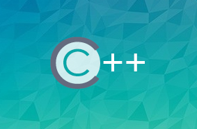

路径介绍
想成为C/C++攻城狮？不知道该如何入门？表捉急，本计划从最基本的C/C++语言基础、各种常用工具到C/C++基础以及框架应用，迈出成为优秀的C/C++工程师的重要一步。
C/C++开发工程师
服务端
求职
实战
C语言程序设计
C程序设计概述
C语言基础
表达式和语句
控制结构
函数
预处理
数组
指针
结构体
位运算
文件
编程中常见的错误与预防
Linux C语言编程基本原理与实践
重识C语言
开发环境与配置
Linux下第一个C程序
多文件操作
makeFile的编写与使用
main函数详解
输入输出流和错误流
管道原理及应用
打造实用C语言小程序
C++从入门到精通
C++简介
C++ IDE环境搭建
C++之初体验
C++语言新特性
综合练习
C++实战
概述
对象成员与对象数组
深拷贝与浅拷贝
对象指针
const再现江湖
学以致用
选择知识点